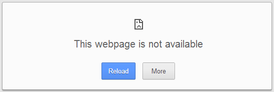

Simple, right?
Will your validation fit?
No? Have you designed something else already?
Wait - do you need it?
No validation != Nothing to do
Countin' on others.
You might be able to bet the farm on Google. But who else?
Note - This includes dependencies on yourself.
... be prepared.
The worst has happened. Now what?
What do you want to capture?
These might be useful:
You're logging failures - great, so now what?
Who is going to look at that?
Batten the hatches.
What happens to your site when there's a catastrophic failure?
Is it this?
Is it your standard error page?
Are you sure this will still work?
Do you have a custom page set aside for a rainy day?
As few dependencies as possible. Pure HTML/CSS.
Who will put this live?
And edit the content?
Consider your failover solution for when things go very very wrong.
Sometimes failures become iconic.